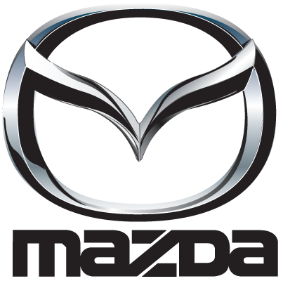
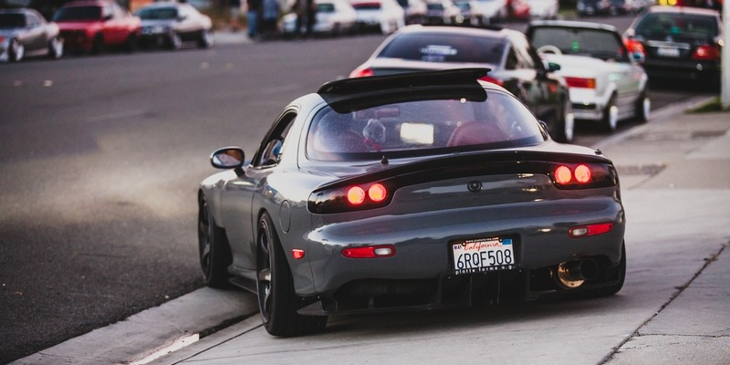

|  |  | |
| Mazda Motor Corporation (яп. マツダ株式会社 Мацуда Кабусики-гайся?) (TYO: 7261 7261) — японська автомобілебудівна компанія, що виробляє автомобілі «Мазда». Штаб-квартира — в Хіросімі. Входить до великого корпоративного конгломерату — холдингу Sumitomo Group. | ||
| Свою історію фірма веде з 1960, коли був випущений перший серійний легковий автомобіль Mazda R360 Coupe (2-х дверний пасажирський автомобіль), раніше фірма, заснована в 1920, займалася виробництвом верстатів. Свою назву «Мазда» (Mazda) фірма отримала на честь зороастрійського бога життя на ім'я Ахура Мазда (він же Ормазд). У 2005 компанія продала 1,15 млн. автомобілів (у 2004 — 1,1 млн.). Виручка у фінансовому році, що завершився 31 березня 2006, склала $24,9 млрд. (зростання на 8,3%), чистий прибуток — $1 млрд. (зростання на 45,7%). | ||